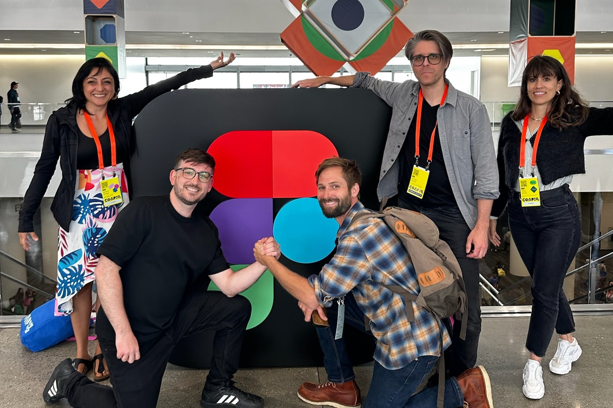
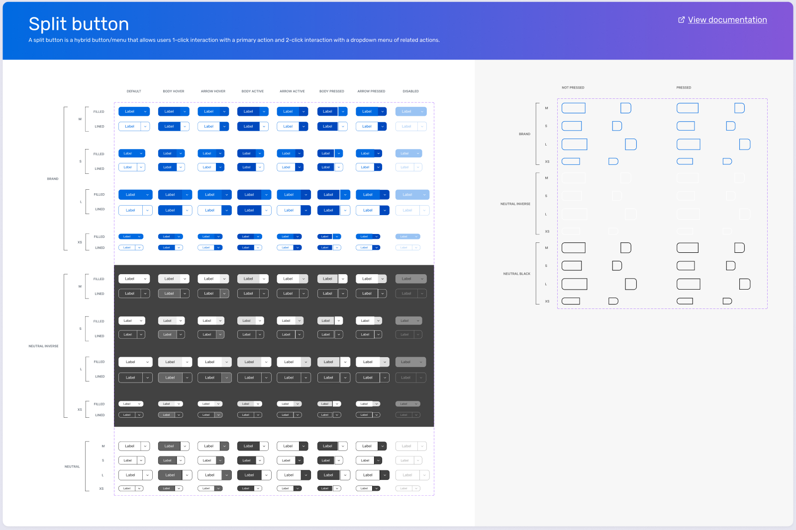
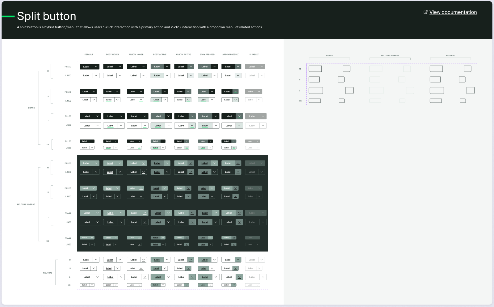

DESIGN SYSTEMS · CVENT
A multi-brand foundation for Cvent’s product teams.
As Manager, User Experience, I lead three teams and seven direct reports. I led the cross-functional effort to create and evolve this multi-brand system, aligning Design, Product and Engineering on shared foundations.

FOUNDATIONS AND THEMING
A token model for flexible theming.
The team built token foundations in Figma and code for company-wide theming, including brand and light/dark modes, then adapted the system for Cvent’s rebrand.
Brand modes
Company-wide theming
Shared event-theme object
Color modes
Light
Dark
REUSABLE COMPONENTS
A shared library that evolves with the brand.
Carina brings together reusable, themable components with accessibility built in. These snapshots show one example from the broader system, offering a glimpse of the original library and its evolution through the rebrand. I’m sharing a limited sample to respect Cvent’s ownership and confidentiality.




DESIGN TO DELIVERY
From design libraries to shipped experiences.
I championed Code Connect to map Figma components to coded counterparts, giving AI workflows accurate production components to work with. I backed the team’s Figma Make kit to keep generated interfaces aligned with the system, and encourage practical trials of emerging beta features such as Code Layers. For the Carina rebrand, we used AI on top of these foundations to accelerate the library update and get it into product teams’ hands sooner.